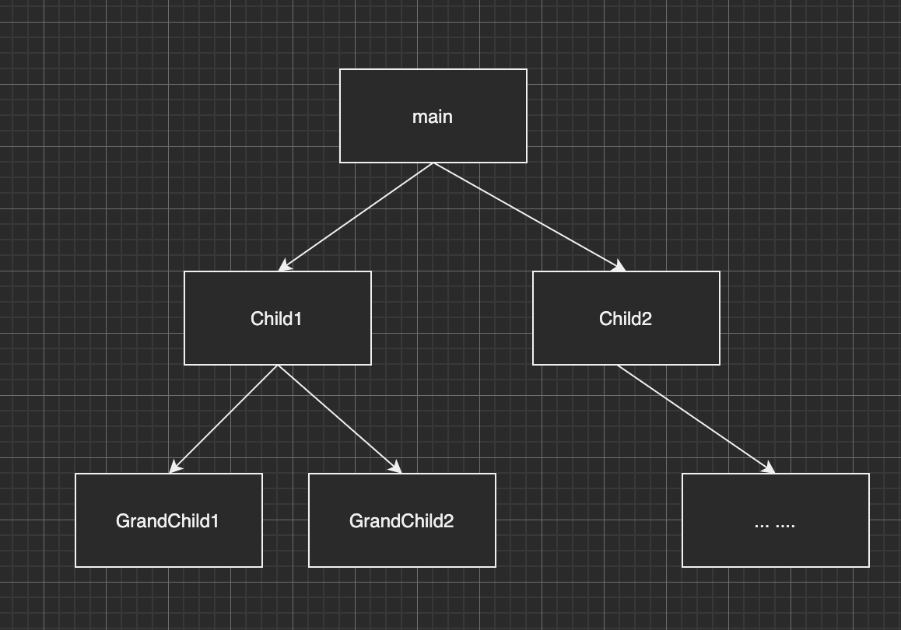

Redux-saga 原理
前置知识
redux-saga本质就是一个generator函数，我们先简单回顾以下generator函数
generator基本语法
function* simpleGenerator() { const value1 = yield 1; const value2 = yield 'zy.zhang'; const value3 = yield 2; } const iterator = simpleGenerator(); console.log(iterator.next()); //{ value: 1, done: false } console.log(iterator.next()); //{ value: 'zy.zhang', done: false } console.log(iterator.next()); //{ value: 2, done: false } console.log(iterator.next()); //{ value: undefined, done: true }
generator函数自动执行
自动执行generator，通过递归next实现
function autoRun(generator) { const it = generator(); let result; function next(arg) { result = it.next(arg); if(!result.done) { next(result.value); } } next(); }
能处理promise的co函数
function co(gen) { var ctx = this; return new Promise(function(resolve, reject) { if (typeof gen === 'function') gen = gen.call(ctx); if (!gen || typeof gen.next !== 'function') return resolve(gen); onFulfilled(); function next(ret) { if (ret.done) return resolve(ret.value); const { value } = ret; if (value && isPromise(value)) return value.then(onFulfilled); } function onFulfilled(res) { var ret; try { ret = gen.next(res); } catch (e) { return reject(e); } next(ret); } }); }
redux-saga effects
call(fetchUserApi) // {type: 'CALL', payload: {fn: fetchUserApi}} put({type: "USER_FETCH_SUCCEEDED", user: 'zzy'}) // {type: 'PUT', payload: {action: {type: "USER_FETCH_SUCCEEDED", user: "zzy"}}} takeEvery("FETCH_USER", fetchUser); // {type: 'FORK', payload: {args: ["FETCH_USER, f* fetchUser"]}}
effects是一个纯对象，{type, payload}表示saga里的各种指令，可以理解为针对当前类型(type)的指令我要处理哪些数据(payload)
核心流程
上面的generaor函数定义了各种指令，有的是发出有的是接受。定义好saga后就交给sagaMiddle来run
1. 创建middleware
function sagaMiddleware({ getState, dispatch }) { boundRunSaga = runSaga.bind(null, { ...options, context, channel, dispatch, getState, sagaMonitor, }) return next => action => { const result = next(action) // hit reducers channel.put(action) return result } } sagaMiddleware.run = (...args) => { if (process.env.NODE_ENV !== 'production' && !boundRunSaga) { throw new Error('Before running a Saga, you must mount the Saga middleware on the Store using applyMiddleware') } return boundRunSaga(...args) }
redux中间件写法参考Redux实现原理
boundRunSaga = runSaga.bind(null, { ...options, context, channel, dispatch, getState, sagaMonitor, })
预设了一些参数，dispatch, getState就是redux store原封不动提供的函数, channel函数稍后讲解,其他参数默认为空,在createSagaMiddle中传入。
2. runSaga
首先调用const iterator = saga(...args)
这里的saga就是我们传入的rootSaga，执行rootSaga返回迭代器iterator
接下来runSaga对入参做了包装
const env = { channel, dispatch: wrapSagaDispatch(dispatch), getState, sagaMonitor, onError, finalizeRunEffect, }
const iterator = saga(...args); if (effectMiddlewares) { const middleware = compose(...effectMiddlewares) finalizeRunEffect = runEffect => { return (effect, effectId, currCb) => { const plainRunEffect = eff => runEffect(eff, effectId, currCb) return middleware(plainRunEffect)(effect) } } } else { finalizeRunEffect = runEffect => runEffect }
finalizeRunEffect是对runEffect的包装，如果createMiddleware时传入了effectMiddlewares参数，这个参数就是普通的redux中间件，如果你想某些中间件只增强saga不对普通的reducer做增强，可以用这个参数。如果不传入该参数，就原封不动的返回runEffect。
前面都是预设包装变量，接下来调用proc(env, iterator, context, effectId, getMetaInfo(saga), /isRoot/ true, undefined)
3. proc
proc.js是saga运行的核心流程
看下面一段代码
function* mySaga() { yield take('MY_TAKE1'); // some code yield take('MY_TAKE2'); // some code }
dispatch({ type: 'MY_TAKE1' }); // ... dispatch({ type: 'MY_TAKE2' });
我们希望这段代码的作用是：当遇见第一个yield时，程序停住，并等待一个type:MY_TAKE1的action发出，接收到这个action之后程序恢复运行，知道遇到下一个yield并等待MY_TAKE2的action发出以便程序继续运行。我们来看下这个过程的实现
忽略掉task相关的东西，我们发现这里的实现方式和co函数很像。
定一个next，执行迭代器的next方法，判断迭代器是否实行完成，如果没有完成就调用runEffect，并把next自身作为参数传入runEffect
export default function proc(env, iterator, parentContext, cont) { const mainTask = { // cont: **will be set when passed to ForkQueue** isRunning: true, isCancelled: false, cancel() { if (mainTask.isRunning && !mainTask.isCancelled) { mainTask.isCancelled = true next(TASK_CANCEL) } }, } const task = new Task(mainTask, Object.create(parentContext)) task.cont = cont cont.cancel = task.cancel next() return task // region function-definitions function next(arg, isErr) { console.assert(mainTask.isRunning, 'Trying to resume an already finished generator') try { let result if (isErr) { result = iterator.throw(arg) } else if (arg === TASK_CANCEL) { mainTask.isCancelled = true next.cancel() result = is.func(iterator.return) ? iterator.return(TASK_CANCEL) : { done: true, value: TASK_CANCEL } } else { result = iterator.next(arg) } if (!result.done) { runEffect(result.value, next) } else { mainTask.isRunning = false mainTask.cont(result.value) } } catch (error) { if (mainTask.isCancelled) { console.error(EXCEPTION_DURING_CANCELLATION, error) } mainTask.isRunning = false mainTask.cont(error, true) } } function runEffect(effect, cb) { if (is.promise(effect)) { resolvePromise(effect, cb) } else if (is.iterator(effect)) { resolveIterator(effect, cb) } else if (is.effect(effect)) { const runner = effectRunnerMap[effect.type] runner(env, task, effect.payload, cb, { runEffect }) } else { cb(effect) } } function resolvePromise(promise, cb) { const cancelPromise = promise[CANCEL] if (is.func(cancelPromise)) { cb.cancel = cancelPromise } promise.then(cb, error => cb(error, true)) } function resolveIterator(iterator, cb) { proc(env, iterator, task.taskContext, cb) } // endregion }
我们来看下runEffect函数
function runEffect(effect, cb) { if (is.promise(effect)) { resolvePromise(effect, cb) } else if (is.iterator(effect)) { resolveIterator(effect, cb) } else if (is.effect(effect)) { const runner = effectRunnerMap[effect.type] runner(env, task, effect.payload, cb, { runEffect }) } else { cb(effect) } }
如果传入的类型是promise,即yield一个promise
yield PromiseInstance
会按照处理promise的方式处理effect，这里可以参考上面的 能处理promise的co函数。
如果传入另外一个generator，会递归的执行proc
我们这里先只考虑通过take函数生成的effect
effectRunnerMap[effect.type]会根据effect type来执行不同的effectRunner
const effectRunnerMap = { [effectTypes.TAKE]: runTakeEffect, [effectTypes.PUT]: runPutEffect, [effectTypes.ALL]: runAllEffect, [effectTypes.RACE]: runRaceEffect, [effectTypes.CALL]: runCallEffect, [effectTypes.CPS]: runCPSEffect, [effectTypes.FORK]: runForkEffect, [effectTypes.JOIN]: runJoinEffect, [effectTypes.CANCEL]: runCancelEffect, [effectTypes.SELECT]: runSelectEffect, [effectTypes.ACTION_CHANNEL]: runChannelEffect, [effectTypes.CANCELLED]: runCancelledEffect, [effectTypes.FLUSH]: runFlushEffect, [effectTypes.GET_CONTEXT]: runGetContextEffect, [effectTypes.SET_CONTEXT]: runSetContextEffect, }
我们先看一下最常用的take, put, call
call
假设有这么一段函数
yield call(fetchUser, userId)
进入到runCallEffect里面,这里的fn和args就是fetchUser和userId
这里的处理方式和runEffect里差不多，如果是promise也调用了resolvePromise
强调一下 这里的cb是自己定义的next
function runCallEffect(env, { context, fn, args }, cb, { task }) { // catch synchronous failures; see #152 try { const result = fn.apply(context, args) if (is.promise(result)) { resolvePromise(result, cb) return } if (is.iterator(result)) { // resolve iterator proc(env, result, task.context, currentEffectId, getMetaInfo(fn), /* isRoot */ false, cb) return } cb(result) } catch (error) { cb(error, true) } }
resolvePromise里按正常处理promie的方法，递归的调用了next()
function resolvePromise(promise, cb) { const cancelPromise = promise[CANCEL] if (is.func(cancelPromise)) { cb.cancel = cancelPromise } promise.then(cb, error => { cb(error, true) }) }
const res1 = yield call(xxx); const res2 = yield call(xxx); const res3 = yield call(xxx);
这样上面的这段代码就实现了自动执行
take
而take指令不会自动往下执行，而是等待一个action，显然是在两次递归中间加了一些东西
function runTakeEffect(env, { channel = env.channel, pattern, maybe }, cb) { const takeCb = input => { if (input instanceof Error) { cb(input, true) return } if (isEnd(input) && !maybe) { cb(TERMINATE) return } cb(input) } try { channel.take(takeCb, is.notUndef(pattern) ? matcher(pattern) : null) } catch (err) { cb(err, true) return } cb.cancel = takeCb.cancel }
take里面调用了channel.take(takeCb≈next)
先不管，再看一下put指令
put
function runPutEffect(env, { channel, action, resolve }, cb) { /** Schedule the put in case another saga is holding a lock. The put will be executed atomically. ie nested puts will execute after this put has terminated. **/ asap(() => { let result try { result = (channel ? channel.put : env.dispatch)(action) } catch (error) { cb(error, true) return } if (resolve && is.promise(result)) { resolvePromise(result, cb) } else { cb(result) } }) // Put effects are non cancellables }
put里调用了(channel.put || dispatch)(action)
两个effect都用到了channel，我们看看channel是啥
4. 监听和派发-通道(Channel)
我们回到middleware的代码中
return next => action => { if (sagaMonitor && sagaMonitor.actionDispatched) { sagaMonitor.actionDispatched(action) } const result = next(action) // hit reducers channel.put(action) return result }
发现每次dispatch都是调用到chaneel.put
两边分别调用了channel.take()和channel.put()。这里利用管道实现了发布订阅，每订阅一个事件就放入管道中，如果监听到了发布的事件就从管道中移除。
channel.js 提供了三种不同的channel,saga默认使用stdChannel,即标准管道
// stdChannel const stdChannel = () => { let currentTakers = []; function take(taker, matcher){ taker['MATCH'] = matcher; taker.cancel = () => { currentTakers = currentTakers.filter(item => item !== taker); } currentTakers.push(taker); } function put(input) { currentTakers.forEach(taker => { if(taker['MATCH'](input)) { taker.cancel(); taker(input); } }); } return { take, put } }
take的时候往takers里push taker，taker是一个你想监听到订阅后执行的回调函数，并在taker上挂载cancel方法和MATCHER属性，cancel的作用是把当前taker从takers里移除，MATCHER属性是一个自定义的方法，用来匹配pattern
put的时候，接收你要监听的时间，遍历takers，通过taker上的MATCH判断是否匹配，如果是执行taker
非阻塞执行-fork
上面的几个指令 take put take等都会中断程序的运行，等待时机恢复
如果仅仅有这几种指令,我们在执行一大段逻辑的时候,代码可能是下面的写法,显然这种阻塞的写法不能适用复杂的业务
function* saga() { yield take('ACTION_1'); // some code yield take('ACTION_2'); // some code yield take('ACTION_3'); // some code }
我们希望有多个子saga,每个saga运行自己的逻辑,并且在程序开始运行时就加载这些sagas,redux-saga提供了fork effect来执行非阻塞指令
function* saga() { yield fork(saga1); yield fork(saga2); yield fork(saga3); }
fork函数接收一个新的generator,返回的指令是: {type: 'FORK', payload: {args, fn: f* saga1()}}
首先我们来看下forkEffectRunner
function runForkEffect(env, { context, fn, args, detached }, cb, { task: parent }) { const taskIterator = createTaskIterator({ context, fn, args }) const meta = getIteratorMetaInfo(taskIterator, fn) immediately(() => { const child = proc(env, taskIterator, parent.context, currentEffectId, meta, detached, undefined) if (detached) { cb(child) } else { if (child.isRunning()) { parent.queue.addTask(child) cb(child) } else if (child.isAborted()) { parent.queue.abort(child.error()) } else { cb(child) } } }) // Fork effects are non cancellables }
fn是被fork的generator函数，首先调用createTaskIterator生成一个迭代器，当然你也可以传一个普通函数，createTaskIterator会把它包装成一个迭代器。我们看到在runForkEffect里面递归调用了proc，这样就启动了子迭代器。
通常在复杂应用中，我们会多次运行fork，比如
function* main() { yield fork(child1); yield fork(child2); // ... } function* child1() { yield fork(grandChild1); yield fork(grandChild2); } function* child2() { // ... }
如果我们将所有父子关系描述出来的话，可以得到类似下面的saga树

其实到目前为止，已经能实现大多数需求了，但是我们还想对saga树做一个增强。
fork模式还应该具有以下特性(节选自官方文档: fork model)
完成：一个 saga 实例在满足以下条件之后进入完成状态:
*迭代器自身的语句执行完成
*所有的 child-saga 进入完成状态
当一个节点的所有子节点完成时，且自身迭代器代码执行完毕时，该节点才算完成
错误传播：一个 saga 实例在以下情况会中断并抛出错误：
- 迭代器自身执行时抛出了异常
- 其中一个 child-saga 抛出了错误
当一个节点发生错误时，错误会沿着树向根节点向上传播，直到某个节点捕获该错误。
取消：取消一个 saga 实例也会导致以下事情的发生：
- 取消 mainTask，也就是取消当前 saga 实例等待的 effect
- 取消所有仍在执行的 child-saga
取消一个节点时，该节点对应的整个子树都将被取消
ForkQueue
ForkQueue是对fork模式的具体实现
我们还需要一个管理saga的工具-任务队列
首先定义一下任务，这里的任务是一个对象，描述了对应的saga，比如定义isRunning，isCancelled，isAborted等属性描述saga状态，定义cancel等方法结束当前saga。
现在我们回到之前的代码,在proc函数里调用了new Task生成了任务
class Task { isRunning = true isCancelled = false isAborted = false result = undefined error = undefined joiners = [] _deferredEnd = null // cont will be set after calling constructor() cont = undefined constructor(mainTask, taskContext) { this.taskQueue = new ForkQueue(mainTask) this.taskQueue.cont = this.end this.taskContext = taskContext } cancel = () => { if (this.isRunning && !this.isCancelled) { this.isCancelled = true this.taskQueue.cancelAll() this.end(TASK_CANCEL) } } end = (result, isErr) => { this.isRunning = false if (!isErr) { this.result = result this._deferredEnd && this._deferredEnd.resolve(result) } else { this.error = result this.isAborted = true this._deferredEnd && this._deferredEnd.reject(result) } this.cont(result, isErr) this.joiners.forEach(j => j.cb(result, isErr)) this.joiners = null } toPromise() { if (this._deferredEnd) { return this._deferredEnd.promise } const def = deferred() this._deferredEnd = def if (!this.isRunning) { if (this.isAborted) { def.reject(this.error) } else { def.resolve(this.result) } } return def.promise } }
在每次生成一个task的时候我们调用forkQueue把当前task push到task队列中，并对每一个task挂载cont方法，即该task完成后要执行的方法。该方法把自己从队列中移除，并在队列中的task全部移除时通过queue.cont向父任务发送完成通知。同样的，发生错误或手动中止时会清空队列并向父任务发送通知。
class ForkQueue { tasks = [] result = undefined completed = false // cont will be set after calling constructor() cont = undefined constructor(mainTask) { this.mainTask = mainTask this.addTask(this.mainTask) } abort(err) { this.cancelAll() this.cont(err, true) } addTask(task) { this.tasks.push(task) task.cont = (res, isErr) => { if (this.completed) { return } remove(this.tasks, task) task.cont = noop if (isErr) { this.abort(res) } else { if (task === this.mainTask) { this.result = res } if (this.tasks.length === 0) { this.completed = true this.cont(this.result) } } } } cancelAll() { if (this.completed) { return } this.completed = true this.tasks.forEach(t => { t.cont = noop t.cancel() }) this.tasks = [] } }
至此，整体的流程如下图所示

一个例子看下task的运行
function* Parent() { const Child1 = yield fork(api.xxxx) // LINE-1 需要 100ms 才能完成 const Child2 = yield fork(api.yyyy) // LINE-2 需要 300ms 才能完成 yield delay(200) // LINE-3 需要 200 ms 才能完成 }

Helpers
基于fork, take等低阶指令，我们可以写出很多好用的辅助函数
takeEvery
import {fork, take} from "redux-saga/effects" const takeEvery = (pattern, saga, ...args) => fork(function*() { while (true) { const action = yield take(pattern) yield fork(saga, ...args.concat(action)) } })
import {cancel, fork, take} from "redux-saga/effects" const takeLatest = (pattern, saga, ...args) => fork(function*() { let lastTask while (true) { const action = yield take(pattern) if (lastTask) { yield cancel(lastTask) // 如果任务已经结束，则 cancel 为空操作 } lastTask = yield fork(saga, ...args.concat(action)) } })
6.总结
谢谢朋友们